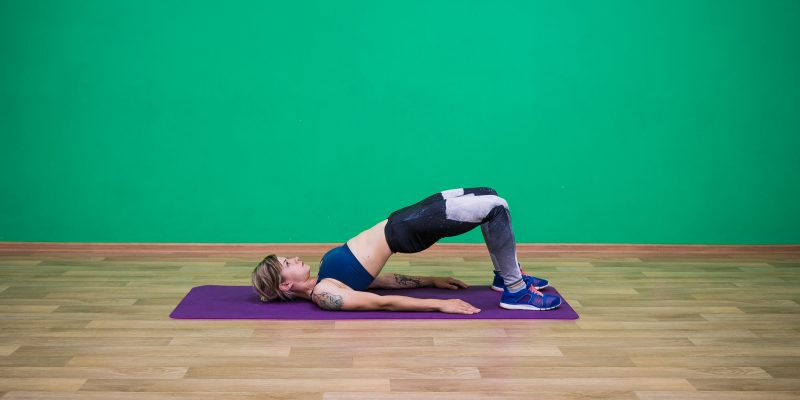

Что такое йога?


Комплекс йоги – это последовательное выполнение разных поз (асан) и нахождение в каждой из них по 2-3 мин. Начинают занятие с медитации. После переходят к разминке, упражнения которой разогревают мускулы, подготавливают их к нагрузкам, а затем успокаивают и расслабляют.
ПодробнееЗанятие позволяет расслабиться, улучшает дыхание и понимание своего организма, повышает мышечный тонус. Позы стоя укрепляют подколенные сухожилия, четырёхглавую мышцу бедра, пресс. В работу включаются и мышцы кора, которые формируют правильную осанку.
Подробнее
Йога не является какой-то магией, религией, верой. Йога – это возможность научиться чувствовать свое тело, избавиться от болей, выровнять спину и освоить правильное спокойное дыхание. Упражнения увеличат мобильность суставов, укрепят мышцы и при этом не доставят никакого дискомфорта.
Подробнее1. Поза моста
Лягте на коврик, положите руки вдоль тела, согните колени и поставьте стопы на пол на ширине бёдер. Поднимите таз от пола, вытяните тело в одну линию от плеч до коленей, сожмите ягодицы, надавите ладонями на пол. Задержитесь в этом положении на пять дыхательных циклов и опуститесь обратно.
2. Поза с коленом у груди
Выпрямите ноги, подтяните одно колено ближе к груди. Толкайте пятку прямой ноги в сторону стены, вытягивая бедро. Задержитесь на три дыхательных цикла, поменяйте ноги и повторите.

3. Половина позы саранчи
Лягте на живот, положите лоб на коврик, руки вытяните по сторонам и разверните ладонями вниз. Поднимите прямую правую ногу, подержите шесть дыхательных циклов, опустите и повторите то же самое движение с левой. Сделайте по два подхода на каждую ногу.

4. Из позы ребёнка в позу кошки‑быка

5. Вариация позы стола
Встаньте на четвереньки и втяните живот. Выпрямите одну руку, задержитесь на три дыхательных цикла и повторите с другой стороны. Затем поднимите прямую ногу до параллели с полом, зафиксируйтесь на три дыхательных цикла и повторите с другой стороны. Затем поднимите прямую ногу до параллели с полом, зафиксируйтесь на три дыхательных цикла и повторите с другой стороны.

6. Поза посоха
Примите упор лёжа, опустите локти на пол, подкрутите таз, чтобы поясница не проваливалась. Удерживайте положение так долго, как сможете. Следите, чтобы поясница не провисала.

7. Поза наездника
Опуститесь на одно колено, поставьте руки на бёдра. Сделайте пять вдохов и выдохов. Отодвиньте опорное колено назад, углубляя выпад, насколько хватает растяжки. Удерживайте положение 10 дыхательных циклов, затем поменяйте ногу и повторите.

8. Наклон вперёд стоя
Встаньте в одном‑двух шагах от стула. Опустите кисти или локти на сиденье, растягивая спину и плечи. Задержитесь на 10 дыхательных циклов. Повторите дважды.

9. Поза на баланс
Встаньте рядом со стулом, придерживайтесь за спинку одной рукой. Согните колено и поднимите его до уровня бедра. Проведите в позе пять дыхательных циклов. Затем поставьте руки на бёдра, напрягите мышцы пресса и снова поднимите ногу. Проведите в позе пять дыхательных циклов и повторите с другой ноги.

10. Поза связанного угла
Сядьте рядом со стеной, прижмитесь к ней спиной. Согните колени, соедините стопы, положите руки на щиколотки и прижмите пятки к тазу. Медленно наклонитесь вперёд, опустите голову и задержитесь в положении на пять дыхательных циклов.


Почему именно йога?
Улучшение осанки
Все мы редко обращаем внимание на осанку во время работы, прогулки. Это приводит ко многим проблемам, такие как боль в спине и шее, неправильная осанка. Регулярное практикования асан йоги не только способствует улучшению тела, но и работает над правильной осанкой, уменьшая риск проблем.
Развитие мышц
Йога укрепляет ваше тело и тонизирует организм. Во время занятий ваши мышцы остаются статичными, фокусируясь на правильном положении. В процессе занятия всегда держится равновесие, а тело балансирует. Эти положения охватывают различные группы мышц: живота, спины, рук, ног.
Расслабление
Жизнь быстрая и бурная, рабочий график и другие личные проблемы нагружают наш разум. Отвлечься от повседневной рутины и ежедневных проблем и задач поможет йога в сочетании с правильным дыханием. Уже после первой тренировки Вы почувствуете, как ваши мысли стали «легче», а на душе спокойнее.